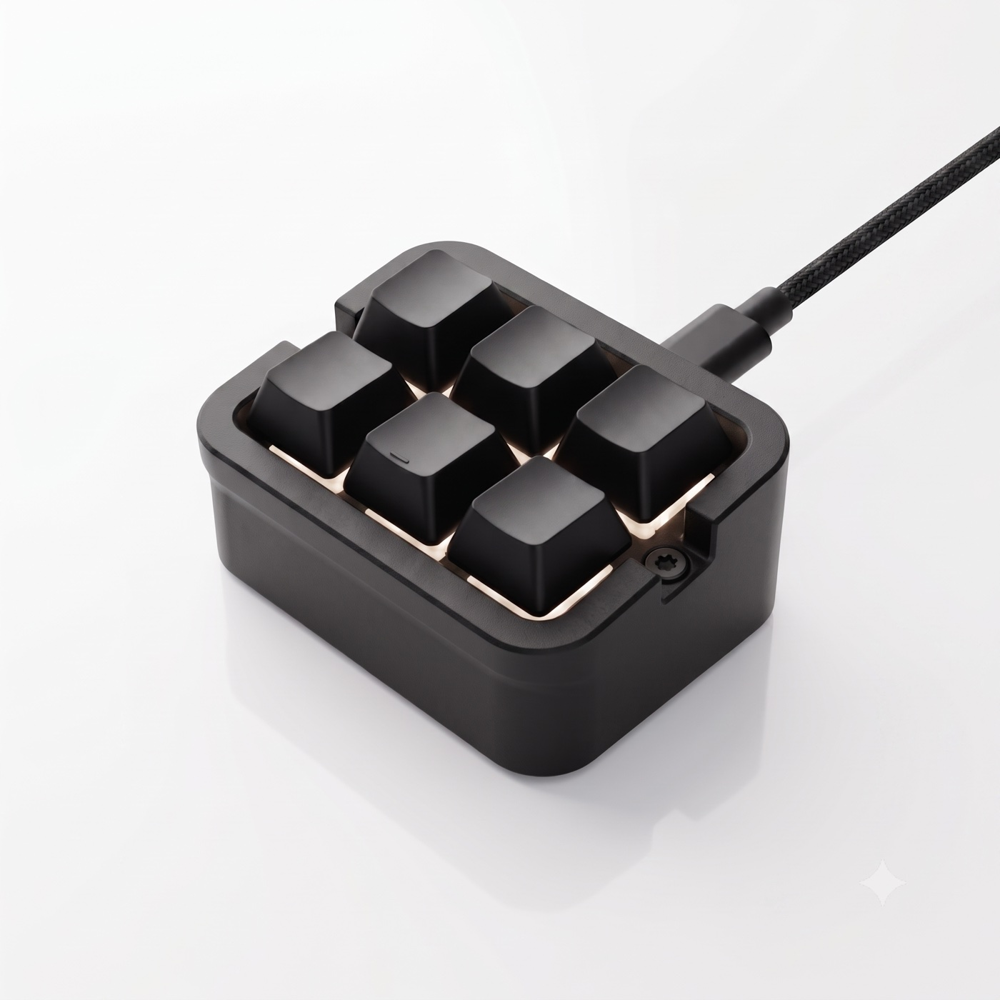
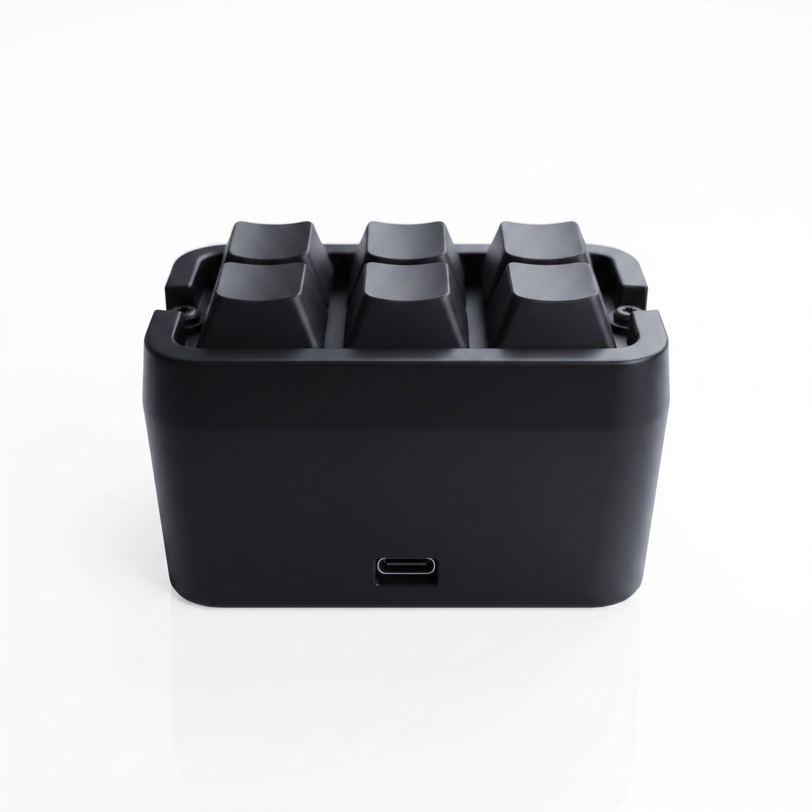
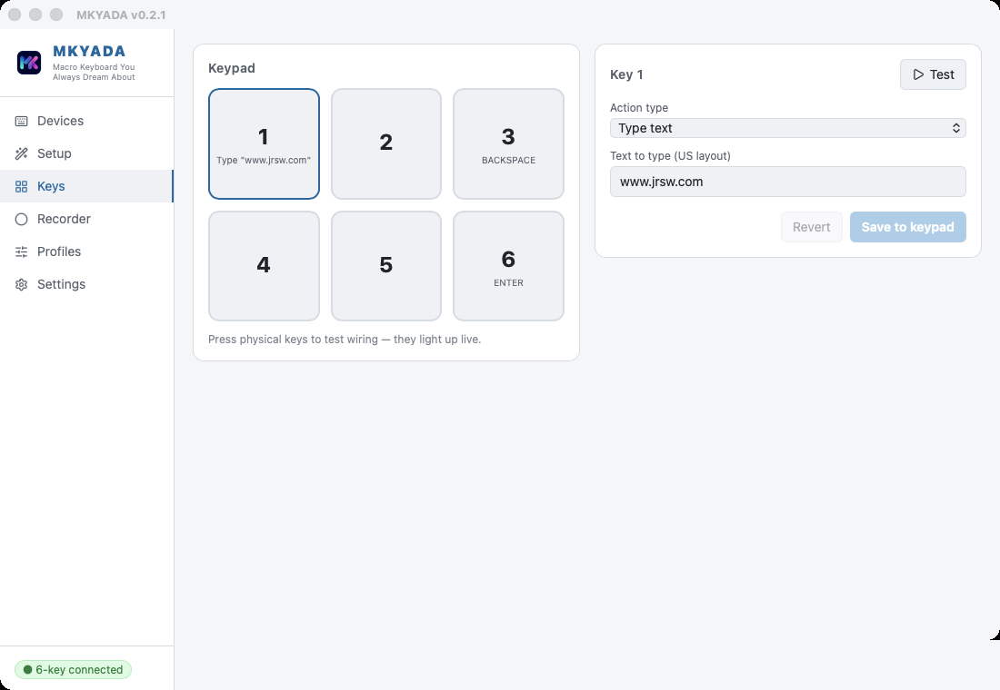
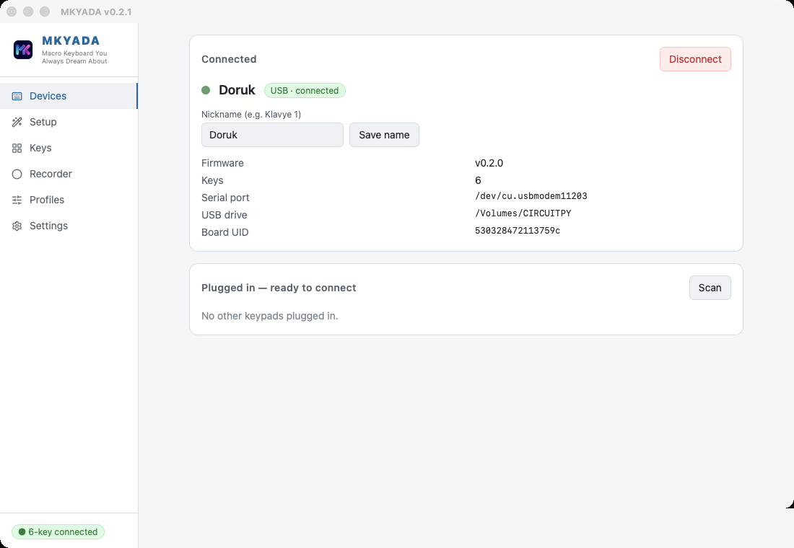

MKYADA is the macro keypad you always dream about — record anything, put it on a key, take it anywhere. MKYADA, hep hayalini kurduğunuz makro klavye — her şeyi kaydedin, bir tuşa atayın, yanınızda götürün.
Free & open source · MIT license · No account, no cloud, no subscription Ücretsiz ve açık kaynak · MIT lisansı · Hesap yok, bulut yok, abonelik yok

Real hardware. Real keystrokes.Gerçek donanım. Gerçek tuş basışları.
Software macro tools inject fake events that games and secure apps happily ignore. MKYADA is different: it is a keyboard and a mouse. Every recorded click, keystroke and mouse path is replayed as genuine USB hardware input — indistinguishable from your own hands. Yazılımsal makro araçları sahte olaylar üretir; oyunlar ve güvenlik isteyen uygulamalar bunları rahatça yok sayar. MKYADA farklı: kendisi gerçek bir klavye ve fare. Kaydedilen her tıklama, tuş ve fare hareketi USB üzerinden gerçek donanım girdisi olarak oynatılır — kendi elinizden ayırt edilemez.
Standalone by designTasarımı gereği bağımsız
Once a macro is on a key, you don't need the app anymore. Unplug the keypad, walk to another desk, another office, another operating system — plug it in and press. Everything is stored on the device as plain, readable JSON files you can even edit by hand. Bir makro tuşa yüklendikten sonra uygulamaya ihtiyacınız kalmaz. Klavyeyi söküp başka bir masaya, başka bir ofise, başka bir işletim sistemine götürün — takın ve basın. Her şey cihazın üzerinde, elle bile düzenleyebileceğiniz sade JSON dosyaları olarak durur.

The recorderKaydedici
Press record and just work: every mouse path, click, scroll, keystroke and pause is captured with millisecond timing. A countdown lets you get in position, and a global hotkey starts and stops recording even while you're inside a game. Kaydı başlatın ve işinizi yapın: her fare hareketi, tıklama, kaydırma, tuş ve bekleme milisaniye hassasiyetinde yakalanır. Geri sayım sizi pozisyon almanız için bekler; global kısayol tuşu oyun içindeyken bile kaydı başlatıp durdurur.
See your recorded path drawn 1:1 on your real screen with a transparent overlay — every click numbered, exactly where it will land.Kaydedilen yol, şeffaf bir katmanla gerçek ekranınızın üzerine 1:1 çizilir — her tıklama numaralı, tam ineceği yerde.
Every coordinate, delay and key is editable. Select 60 rows with one shift-click and delete them. Straighten paths, rescale timing, optimize for the device.Her koordinat, gecikme ve tuş düzenlenebilir. Shift ile tek tıkta 60 satırı seçip silin. Yolları düzleştirin, süreyi ölçekleyin, cihaz için optimize edin.
Press again to stop or restart. Hold the key to repeat like a held letter. Loop until you press again. Speed it up 10×. You decide.Tekrar basınca dursun ya da baştan başlasın. Basılı tutunca harf gibi tekrarlasın. Siz basana kadar dönsün. 10 kat hızlansın. Karar sizin.
Layers & profilesKatmanlar ve profiller
Turn any key into a layer switch and multiply your keypad: layer A for editing, layer B for streaming, layer C for that one game. The app shows which layer you're on, live. And with per-app profiles, the same key can mean one thing in Photoshop and another in your browser — switching automatically as you switch windows. Herhangi bir tuşu katman anahtarına çevirin ve klavyenizi katlayın: katman A kurgu için, katman B yayın için, katman C o meşhur oyun için. Uygulama hangi katmanda olduğunuzu canlı gösterir. Uygulamaya özel profillerle aynı tuş Photoshop'ta başka, tarayıcıda başka bir işe yarar — pencere değiştirdikçe kendiliğinden geçiş yapar.

Speaks your keyboard's languageKlavyenizin dilini konuşur
Most macro tools silently assume a US keyboard. MKYADA reads your real layout: what you press is what you see, and what plays back is exactly what you typed — ş, ğ, é, ü and all. Text snippets compile to the right physical keys for your layout, AltGr included. Çoğu makro aracı sessizce ABD klavyesi varsayar. MKYADA gerçek düzeninizi okur: ne basarsanız onu görürsünüz, oynatılan da tam yazdığınızdır — ş, ğ, é, ü dahil. Metin parçacıkları sizin düzeninize göre doğru fiziksel tuşlara derlenir, AltGr dahil.
The desktop appMasaüstü uygulaması
Assign a key by simply pressing the shortcut you want — no menus to dig through. Light and dark themes, live key testing, a setup wizard that summarizes your keypad at a glance, and firmware updates delivered inside the app. It even stays on top of your game while you fine-tune coordinates. Tuş atamak için istediğiniz kısayola basmanız yeter — menülerde kaybolmak yok. Açık ve koyu tema, canlı tuş testi, kurulumunuzu tek bakışta özetleyen sihirbaz ve uygulama içinden gelen bellenim güncellemeleri. Koordinatlarda ince ayar yaparken oyununuzun üstünde bile kalır.

Open hardwareAçık donanım
MKYADA runs on the $5 RP2040-Zero. Print the case from the included STL files, solder anywhere from 1 to 20 keys to a common ground, flash the firmware — done. The wiring guide walks you through every joint, and if you solder keys in the “wrong” order, you remap them in the app instead of reaching for the iron. MKYADA 5 dolarlık RP2040-Zero üzerinde çalışır. Depodaki STL dosyalarından gövdeyi basın, 1 ile 20 arası tuşu ortak GND'ye lehimleyin, bellenimi yükleyin — bitti. Lehim rehberi her noktayı adım adım anlatır; tuşları “yanlış” sırayla lehimlediyseniz havyaya değil uygulamadaki yeniden eşlemeye uzanırsınız.
Two STL files in the repo: the RP2040-Zero body and a 3×2 faceplate. Any desktop FDM printer will do.Depoda iki STL var: RP2040-Zero gövdesi ve 3×2 kapak. Sıradan bir masaüstü FDM yazıcı yeterli.
All switches share one ground; each signal pin gets a key, in order. 1 key or 20 — the firmware adapts.Tüm anahtarlar tek GND'yi paylaşır; her sinyal pinine sırayla bir tuş. 1 tuş da olur 20 de — bellenim uyum sağlar.
Drop the firmware onto the board's USB drive. From then on, updates arrive inside the app.Bellenimi kartın USB sürücüsüne sürükleyin. Sonrası için güncellemeler uygulamanın içinden gelir.
Download the app, or build the whole thing from scratch. Either way, it's free — and it's yours. Uygulamayı indirin ya da her şeyi sıfırdan kendiniz yapın. İki türlü de ücretsiz — ve tamamen sizin.